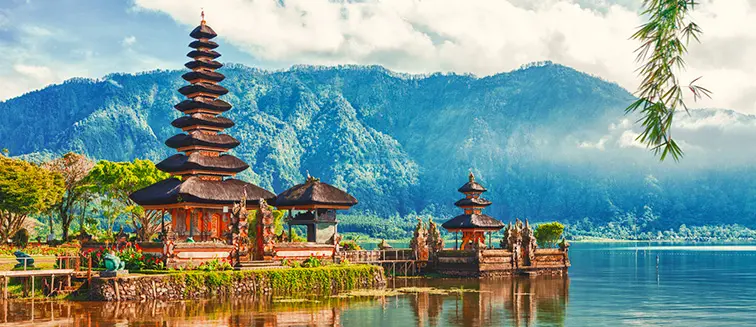

Introducción
Bali, conocida como la "Isla de los Dioses", es un destino paradisíaco situado en Indonesia. Con sus impresionantes paisajes, playas de arena blanca, templos antiguos y cultura vibrante, Bali ofrece una experiencia única a sus visitantes.
Atracciones
Entre las muchas atracciones que ofrece Bali se encuentran el Templo Uluwatu, Ubud, la Playa de Kuta, el Monte Batur y los Arrozales de Jatiluwih. Cada rincón de la isla está lleno de belleza natural y espiritualidad.
Imágenes

Vista panorámica de la isla de Bali